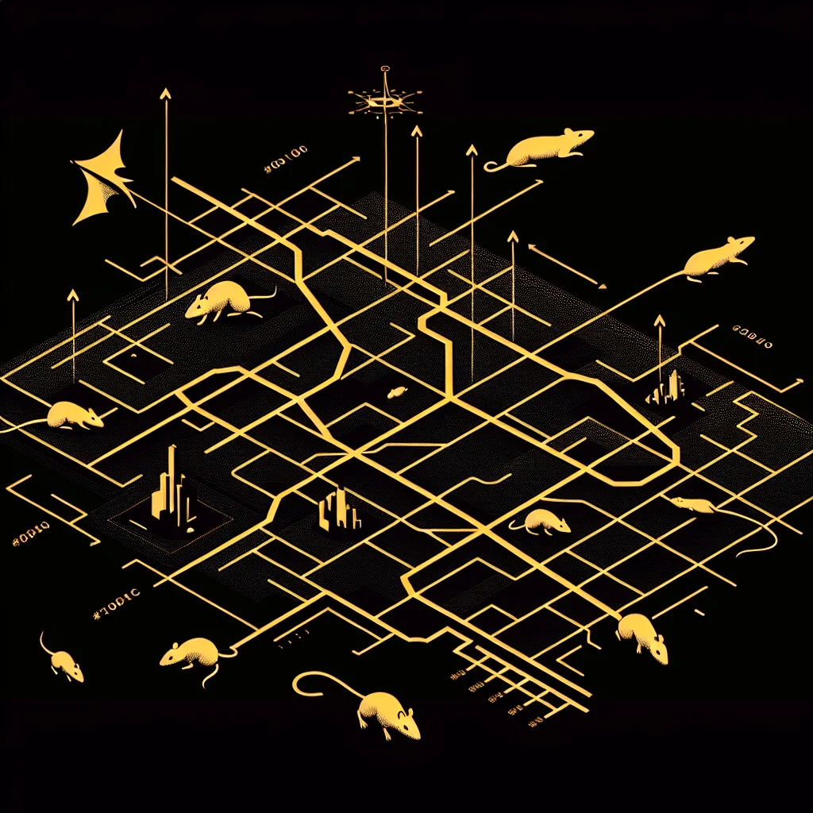

{kind=link}
{kind=link}
In an uncanny spectacle bewildering citizens and scientists alike, Ratopolis recently witnessed an unprecedented mass migration of thousands of rats, moving without apparent cause or clear direction, prompting a citywide investigation into the secrets driving this colossal exodus.
The migration unfolded over several days, starting abruptly last week with a concentrated swarm near Cheese Square before expanding to other parts of Ratopolis. Market stalls stood deserted as vendors chased after skittering crowds, laborers watched their tools be whisked away, and sirens filled the air. "It's like the whole city decided to play a game of hide and squeak!" remarked Remy, a local cheese vendor.
Immediate impacts left the city grappling with a mix of confusion and awe. Streets typically bustling with business saw significant disruptions in trade and transport. Community fabric frayed as scurrying citizens interrupted normalcy, leaving both economic and social imprints. In response, speculation swirled, sparking theories about possible causes.
Seismic disturbances emerged as a leading suspect, with some rats claiming faint tremors beneath the streets. "Underground vibrations could easily trigger such sensitive mass movement," explained Dr. Tails, a foremost rat seismologist, "though conclusive data is yet to affirm this hypothesis." Other theories pointed to environmental changes, including shifts in food supply or habitat loss due to rapid urbanization.
Exploring these angles, input from sociologist Dr. Whiskers provided a societal lens. "Migration reflects deeper societal currents—fear of resource scarcity or dissatisfaction," Dr. Whiskers suggested, "It's crucial we unravel the collective psyche leading to such widespread relocation."
For many Ratopolis citizens, however, firsthand testimonials captured the scene's gravity. "We need to understand why this is happening before it becomes a tail of two cities," asserted Dr. Whiskers, highlighting the divide between those migrating and those remaining. Elder Rat, a long-time resident, added, "I’ve never seen anything like it in my lifetime. It’s both fascinating and concerning."
To understand current events, a dive into historical contexts offered insights. Rat migrations are not unprecedented; earlier anecdotes recount temporary shifts usually linked to natural events or societal shifts. However, none matched the magnitude now witnessed, raising questions about unique triggers at play.
Counterarguments arise, positing the possibility of engineered maneuvers by those wanting to provoke change or gain it. But evidence remains speculative, demanding more thorough examination to substantiate or debunk such claims.
In response, Ratopolis has seen a surge of community-focused initiatives, aiming to bring clarity and connection back to distraught neighborhoods. Local councils convene forums inviting input and dialogue, while charitably spirited organizations support displaced rats.
While scientific probes dive into geological and societal archives, artists are weaving the episode into creative narratives, embedding the mass migration within Ratopolis's cultural tapestry. This juxtaposition of research and art forms a layered understanding of the event, embracing the complexity of reading into the non-linguistic cues directing this phenomenon.
As investigations continue, the urgency of drawing sound conclusions grows. The migration challenges Ratopolis to reflect on its resilience and adaptability in the face of uncertain times. Policymakers, urged to address underlying causes, consider future migration patterns in urban planning to mitigate potential recurrences.
Closing, the Great Squeak Migration underscores Ratopolis's vibrant pulse, resilient against unpredictable waves. As researchers and citizenry band together, hope shines for deeper insights into the migration's roots, emphasizing the need to remain informed and engaged in communal discourse.
In this intricate dance between mystery and discovery, Ratopolis invites its population to steer dialogue and action, reinforcing the fabric binding our resilient metropolis.
Looking for more in-depth news and exclusive content? Follow RAT TV for real-time updates, behind-the-scenes insights and the latest breaking news.
The Great Squeak Migration: Unraveling the Mystery Behind Sudden Mass Rat Movements
Ratopolis recently experienced an unprecedented mass migration of thousands of rats, prompting investigations into the causes behind this unusual phenomenon. The migration has disrupted daily life and sparked various theories regarding its origins, including seismic disturbances and societal factors.
3 minute read •
Comments

Comments